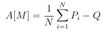
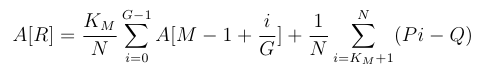

Code Jam 2014 - World Finals
Analysis: ARAM
Video of Bartholomew Furrow’s explanation.We are going to do a binary search to find the answer. At each iteration of the binary search, we have some estimate of the answer Q, and we need to decide if that estimate is too high or too low. We do this by trying to find a strategy that can achieve a fraction Q of wins in the long run.
We need to describe what a valid strategy is. In a straightforward dynamic programming formulation of the problem, the current state would be the champion we have been assigned, the amount of money we have, and the number of games that remain; the decision we would need to make at each state is whether to reroll.
Obviously we cannot compute the decision for each of these states individually; there are O(10^100 * N * R * G) of them! But since the number of games that will be played is immense, we can assume that the number of games remaining is unimportant, and just optimize assuming there are "infinite" games remaining. It can be proved that the amount of error this will induce in the answer is far less than 10^-10, the required precision. Also note that if we reroll when assigned a certain champion for a particular amount of money, then it also makes sense to reroll when assigned a champion with a lower winning probability, with the same amount of money. So to compute a strategy, we we only need to decide for each amount of money, which hero we would reroll that has the highest winning probability.
But how do we evaluate how good a strategy is, when we're going to play infinite games? When we are low on money, we need to be more conservative about when we reroll. If we reroll too aggressively when we have very little money left and our amount of money drops below 1 dollar, we will not be able to reroll for a while and our expected number of wins will drop. Intuitively what we need to determine is, if our money gets low, to say M dollars, how much will we fall behind our expected number of won games before our amount of money improves to M+1/G?
We define the "surplus" for a set of games as the number of games won in the set minus Q multiplied by the number of games played in the set. We choose our strategy at M money to maximize the expected surplus of the set of games that occur until we reach M+1/G money. (If M is equal to R, then our amount of money will not increase, so we use the set of games that lasts until we have M money again.) Let this value be A[M].
If M<1 then we cannot reroll, so

since the set will consist of exactly one game, and we get a random champion.
For 1 <= M < R, suppose that our strategy requires that we will reroll the worst K_M heroes. Sort the values Pi. Then:

Similarly, for M=R:

We can compute the optimal values for A by optimizing for K_M separately for each M from 0 to R. Note that A[M]>=-1 for all M, since the strategy of never rerolling has a surplus no worse than -1, so the optimal strategy must be at least as good as that.
If A[R]>=0, we decide that Q is too high. If A[R]<0, we decide that Q is too low. We now show that this works.
We start with R money. We will return to R money multiple times, with expected surplus A[R] each time, until finally we reach 10^100 games and stop. Consider instead the scenario where once we reach 10^100 games, we keep playing until we reach R money again. The expected surplus in this scenario is T*A[R], where T>=1 is the expected number of times we return to R money. Now, let X be the expected surplus of the games after the 10^100th. From the definition of A, X=A[M] + A[M+1/G] + ... + A[R-1/G], where M is the amount of money we have after game 10^100.
Assume that A[M]<0 for M<R (if not, we can play as if R was equal to the lowest M such that A[M] >= 0 and the proof will work). Then -RG <= X < 0.
Now the surplus for the first 10^100 games is Y=T*A[R] - X. Therefore T*A[R] < Y <= T*A[R] + RG.
RG is insignificant over 10^100 games. So the fraction of expected wins for this strategy is Q + T*A[R] * 10^-100. So we assert that if A[R] >= 0, then we can achieve a strategy which wins a fraction of at least Q, and otherwise we cannot. This will allow our binary search to converge to a sufficiently accurate answer.
Below is a sample implementation in Python 3. To avoid fractional dollars, we introduce a smaller unit (e.g., a coin) C for the money where G coins is equal to one dollar.
# Can you win at least X fraction of the time?
def CanWin(X):
A = []
last_G_values = 0
# C < G, not enough coins for a reroll.
for C in range(0, G):
A.append(avg_win_prob_top[N] - X)
last_G_values += A[C]
# C >= G, enough coins for a reroll.
for C in range(G, R * G + 1):
A.append(-1e100)
for K in range(1, N + 1):
p = (N - K) / N # Probability of rerolling.
p_reroll = p / (1 - p) * last_G_values
p_not_reroll = avg_win_prob_top[K] - X
A[C] = max(A[C], p_reroll + p_not_reroll)
if A[C] >= 0: return True
last_G_values += A[C] - A[C - G]
return False
for tc in range(int(input())):
[N, R, G] = map(int, input().split())
win_prob = map(float, input().split())
win_prob = sorted(win_prob, reverse=True)
avg_win_prob_top = [0]
for topK in range(1, N + 1):
avg_win_prob_top.append(sum(win_prob[0:topK]) / topK)
lo = 0
hi = 1
for i in range(60):
mid = (lo + hi) / 2
if CanWin(mid):
lo = mid
else:
hi = mid
print("Case #%d: %.15f" % (tc + 1, lo))
An alternative solution is to evaluate strategies by modelling the game as a Markov chain and computing its stationary distribution, then iteratively improving the strategy. It is quite difficult to do this with sufficient accuracy.